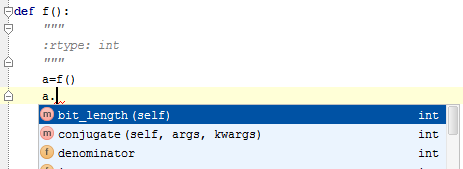

Use type hinting to inform PyCharm about the expected types of parameters, local variables, fields, or return values.
When the expected type is specified as a docstring, PyCharm provides code completion that suggests elements of the corresponding type:
